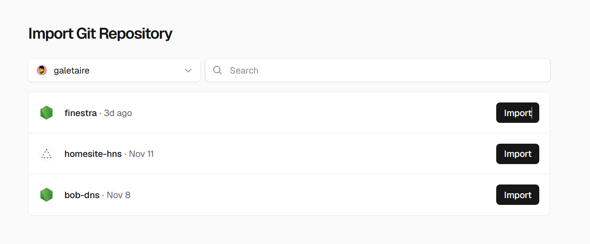
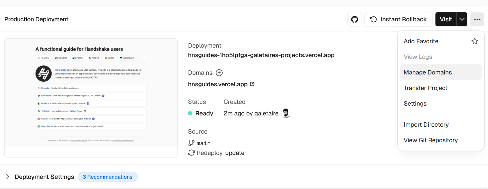
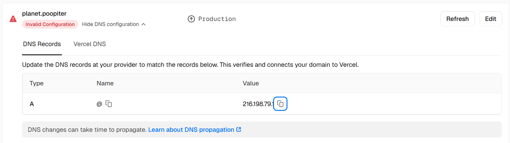
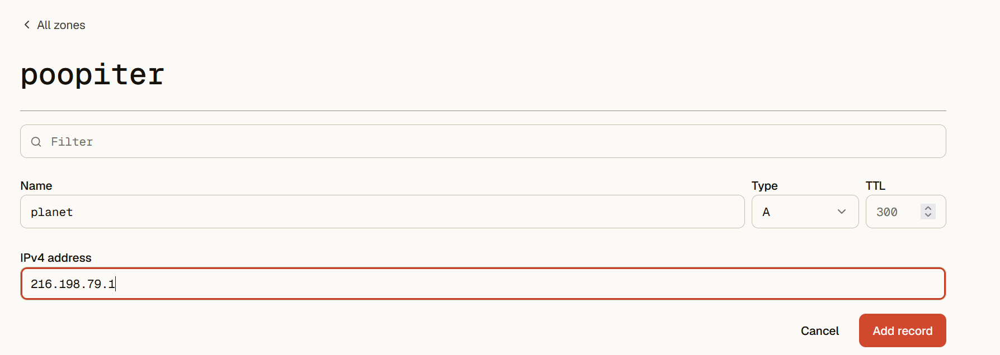
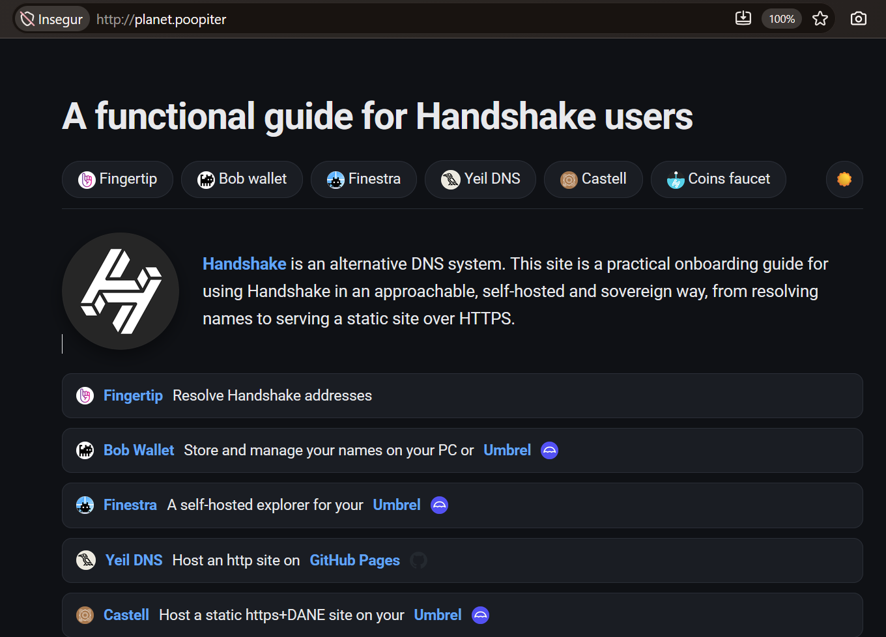

Host a free static site on GitHub Pages and point your Handshake name to it with Yeil DNS, which manages your records without taking custody of your name.
Note: Yeil DNS is a DNS hosting service that lets you manage your name records from a self-custodial wallet (one TLD free; unlimited for $12/year). This guide uses Bob, but Namebase Wallet, from the same team behind Yeil, is another great option that can be used, and I encourage you to try too.
You'll need a TLD held in your own Bob Wallet or Namebase Wallet, plus a small amount of HNS (10 HNS is more than enough). If you're new to Handshake, you can get some HNS from the faucet.
Once you have some HNS, you can bid on TLDs in name auctions using Bob or Namebase. Both are self-custodial wallets that let you take part in the auctions directly.
Yeil DNS is a service that lets you point your self-custodied TLD to its nameservers, so you can manage your domain records without giving up custody of your TLD. At any time, you can use your wallet to remove the records that point your TLD to Yeil, ending the connection. Yeil is developed by eskimo.
You need to connect your TLD (in your wallet) to Yeil DNS. In your Yeil account, go to New zone, type the TLD name you own, and click Add. Once created it will appear the records you need to add to your TLD in Bob Wallet in order to create the connection.
In Bob Wallet, go to Domain Manager and click your TLD to open a new screen. In the Records section, add the records provided by Yeil:
a.ns.yeil.org, add a point . at the end if encountering errors b.ns.yeil.org.Click Submit to save the changes. Updating takes roughly 10–20 minutes (the time for each block to be minted). After that, you should be able to see the new records on any HNS explorer, such as Shakeshift.
Create a New repository, give it a name of your choice, and click Create.
In your new repository, click Add file → Create new file. Name the file index.html and add some HTML content in the editor, for example:
<h1>Hi, it's me!</h1>Commit the changes.
Still on GitHub, open the Settings tab and scroll down to the Pages section. Set the source to the main branch and the / (root) folder, then click Save. After about 5 minutes, refresh the Pages section, a message at the top will show that your site is live at a URL similar to:
https://youraccount.github.io/yourrepositoryVisit the site. At this point, your website is online.
In the Pages section, go to Custom domain and add your desired domain. Note that GitHub will not recognize a pure HNS top-level domain (e.g. http://yourdomain), it must be a second-level domain, such as:
hi.yourdomainBecause it is not an ICANN domain, GitHub will report that it doesn't work. Even though it will always show "DNS Check in Progress," your site will still be online. It takes around 30 minutes to go live.
Finally, connect Yeil with GitHub. In your Yeil DNS zone, click New record for your domain and add an A record:
| Type | Name | IPv4 address |
|---|---|---|
| A | hi.yourdomain | 185.199.111.153 (a GitHub Pages IP) |
The record update takes about 6 hours to go live. After that, your site will be online at your domain 🎉:
http://hi.yourdomain/This last step is optional, and requires a free Vercel account. It's for when you want your site to stay online over HTTP while keeping its GitHub repository private. On GitHub's free plan, GitHub Pages only works with public repositories. If you make your repository private, your site goes offline. Vercel solves this: it reads your repository directly (even a private one) and serves the site itself, so the code can stay private while the site stays online.
How it works, in short: you connect GitHub to Vercel, import your website repository, add your domain in Vercel, and then add the DNS records Vercel gives you on Yeil DNS. From then on, Vercel serves your site. Each time you push changes to GitHub, Vercel updates the site automatically.
 1 Create a new project in your Vercel account
1 Create a new project in your Vercel account

2 Import your website repository from GitHub 3 Click "Import", once deployed then "Continue to Project"
3 Click "Import", once deployed then "Continue to Project"

4 Go to "Manage Domains" 5 Add your domain. As with GitHub Pages, it must be a second-level domain (SLD); a bare TLD won't work
5 Add your domain. As with GitHub Pages, it must be a second-level domain (SLD); a bare TLD won't work

6 Open the DNS records Vercel asks you to add
7 Add the A records on Yeil, or whichever nameserver you use
8 Once the records propagate, your site will be online, and you can make your GitHub repository privateTip: if your site is plain HTML (no build tools), set Framework Preset to Other when importing. If you later see a
404: NOT_FOUNDpage, go to Settings → Build & Deployment, set the Output Directory to.(a single dot), and redeploy.